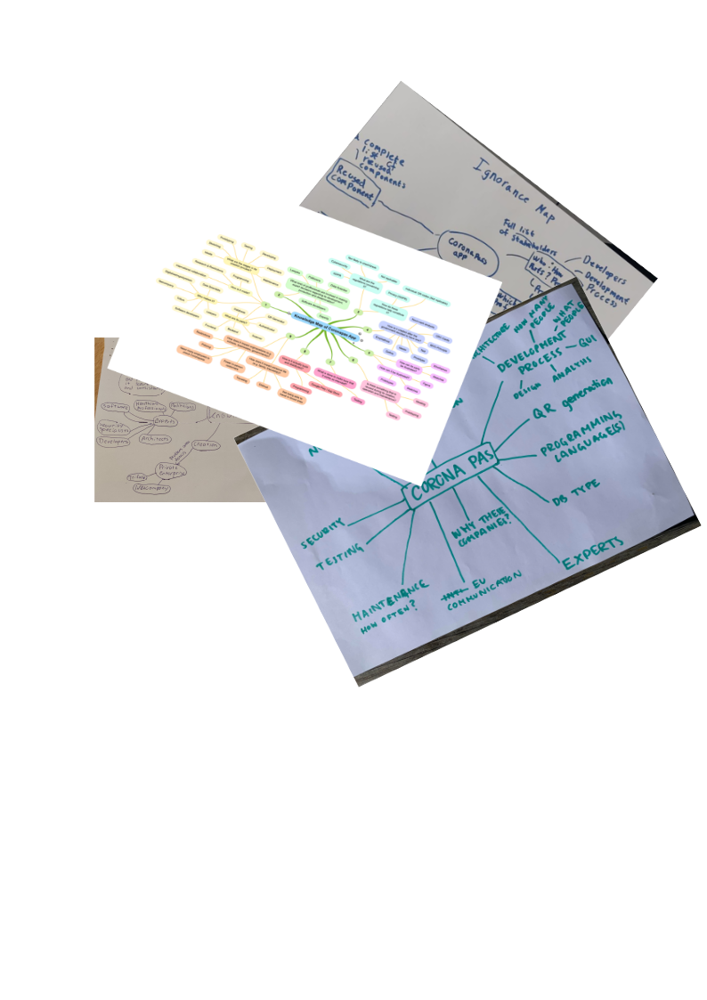
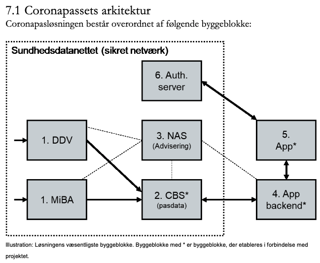

class: center, middle <img src="https://www.saa-authors.eu/picture/739/ftw_768/saa-mtcwmza4nzq5mq.jpg" width="50%"> # Analysis, Design and Software Architecture ## Software Engineering Session 2 Helge Pfeiffer, Assistant Professor,<br> [Research Center for Government IT](https://www.itu.dk/forskning/institutter/institut-for-datalogi/forskningscenter-for-offentlig-it),<br> [IT University of Copenhagen, Denmark](https://www.itu.dk)<br> `ropf@itu.dk` --- class: center, middle # Feedback and Recap --- ### Feedback * Behave good! Do not do things or say things that you would not do in front of your grandmother on a Sunday's coffee table.  --- ### Recap: Implosion of Coronapas App  --- ### Recap: Implosion of Coronapas App * What I condensed from your knowledge maps - Different roles and stakeholders? - Process that consists at least of implementation and maintenance? - 2/3-tier architecture? - Use of UML. Are you sure about this? * What I condensed from your ignorance maps - How does one know that it works as intended? - How is it tested and debugged? - Who/which roles made the app precisely? - Exact process (stages and iterations?) and tools involved in its creation? - Precise requirements and goals of product? - Frequency and timeframe for maintenance tasks? - Precise structure and components of application? --- ### Recap: These are the topics of this course! * How to figure out and how to capture what a software system is supposed to do. (Requirements engineering and analysis) * How to design a software system's architecture and internals (Design and application of patterns and design guidelines). * How to communicate about a software system (UML). * How to test, build, and package a software system. * How to create software (Software development processes). --- class: center, middle # Terminology --- ### Terminology We are in a course _"Analysis, Design and Software Architecture"_. We have to get an idea about what we are doing in this course. That is, we have to better understand these terms: _"**Analysis①**, **Design②** and **Software⓪** **Architecture③**"_. --- ### What is Software? Interestingly, it is not properly defined what software actually is. -- Common definitions are not too helpful: > "[software are] the programs and other operating information used by a computer." > > Oxford Dictionary of English --- ### What is software and why does it matter? - Stakeholders negotiating and signing software sourcing contracts are often generalists. - The contracts that they sign have to specify what is a deliverable and what is not. - This is where the question arises: _"What shall be considered software, i.e., what precisely are the artifacts to be delivered?"_ -- - There are cases where customers got delivered a systems' source code without a complete build specification and without the built executable. Since source code alone is unusable, build code as well as executables should be considered constituents of software. --- ### What is Software? What SW Engineering standards say: > "computer **programs**, **procedures**, and possibly associated **documentation** and **data** pertaining to the operation of a computer system [...]" > > [_828-2012 - IEEE Standard for Configuration Management in Systems and Software Engineering_, 2012](https://ieeexplore.ieee.org/document/6170935) -- <hr> > "all or a part of the **programs**, **procedures**, **rules**, and associated **documentation** of an information processing system. > [...] it is typically important to include both **executable** and **non-executable** software, such as fonts, graphics, audio and video recordings, templates, dictionaries, documents and information structures such as database records." > > [_ISO/IEC 19770-5:2015(en) Information technology - IT asset management_, 2015](https://www.iso.org/obp/ui/#iso:std:iso-iec:19770:-5:ed-2:v1:en) -- <hr> > "all or part of the **programs** which process or support the processing of digital information > > [...] For the purposes of this definition, **software excludes information per se**, such as the content of documents, audio and video recordings, graphics, and databases. > > [...] There is both **executable** and **non-executable** software. The purpose of non-executable software is to control or support executable software, and includes, for example, configuration information, fonts, and spell-checker dictionaries. Digital information which is managed by executable software (e.g. the content of documents and databases) is not considered software [...] , even though program execution may depend on data values." > > [_ISO/IEC 19770-1:2017(en) Information technology – IT asset management_, 2017](https://www.iso.org/obp/ui/#iso:std:iso-iec:19770:-1:ed-3:v1:en) --- ### What is Software? What contracts say: * In some countries public agencies use prescribed standard contracts when sourcing software, e.g., the Danish standard contracts (K01, K02, and K03) and the British Model Services Contract. * Definitions -if given- are recursive and inconclusive. - MSC & K01 do not explicitly define of the term _software_. - K02 & K03 define it recursively. -- > **Software** > > Consists of **Customer-specific** Software and/or **Standard Software**. Also includes interfaces. <!-- > "Programmel > > Består af Kundespecifikt Programmel og/eller Standardprogrammel. Omfatter også grænseflader." --> -- <hr> > **Customer-specific Software** > > Software that is not classified [...] as Standard Software. <!-- > "Kundespecifikt Programmel > > Programmel, der ikke i Bilag 3 rubriceres som Standardprogrammel." --> -- <hr> > **Standard Software** > > [...] is neither customized, adapted, nor developed specifically for the customer in connection with the supplier's fulfillment of the contract, and partly available to anyone on ordinary commercial or non-commercial and equal terms. --- ### What is Software? What contracts say: Of what remind you the definitions of _software_ in K02 and K03? > **Software** > > Consists of Customer-specific Software and/or Standard Software. Also includes interfaces. > > **Customer-specific Software** > > Software that is not classified [...] as Standard Software. > > **Standard Software** > > [...] is neither customized, adapted, nor developed specifically for the customer in connection with the supplier's fulfillment of the contract, and partly available to anyone on ordinary commercial or non-commercial and equal terms. -- Sommerville says there are two kinds of _software products_: > 1. **Generic products** These are stand-alone systems that are produced by a development organization and sold on the open market to any customer who is able to buy them. [...] > 1. **Customized (or bespoke) software** These are systems that are commissioned by and developed for a particular customer. A software contractor designs and implements the software especially for that customer. [...] --- ### What is Software? What academics say: * Definitions -if given- are inconclusive or mere lists of exemplary artifacts: > [...] software is not just the programs themselves but also all associated documentation and configuration data that is required to make these programs operate correctly. [...] It may include system documentation, [...] user documentation, [...] and websites for users to download recent product information." > > Sommerville _"Software Engineering"_ (9th Ed.) -- <hr> > [...] software is not just the programs themselves but also all associated documentation, libraries, support web-sites, and configuration data that are needed to make these programs useful. [...] It may include system documentation, [...] user documentation, [...] and websites for users to download recent product information. > > Sommerville _"Software Engineering"_ (10th Ed.) <a href="https://raw.githubusercontent.com/itu-devops/lecture_notes/master/sessions/session_02/images/deps.png"><img src="https://raw.githubusercontent.com/itu-devops/lecture_notes/master/sessions/session_02/images/deps.png" width="7%"></a> -- <hr> > * Real software runs on computers. It is a sequence of ones and zeros that is stored on some magnetic media. It is not a program listing in C++ (or any other programming language). > * A program listing is a document that represents a software design. Compilers and linkers actually build software designs. > > J. Reeves _"What is Software?"_ --- ### What academics say: * Definitions are _unpractical_: > "[...] software is pattern per se, or syntactical form [...] Hardware, in short, is also software, but only because everything is." > > P. Suber, "What is software?" The Journal of Speculative Philosophy, pp. 89–119, 1988. --- ### Detour: _"Hardware [...] is also software"_??? * Imagine, we have a computer based on the 6502 microprocessor <img src="https://upload.wikimedia.org/wikipedia/commons/8/86/C64motherboard.jpg" width="60%"> * We write an assembler program, which increases the number 16 (`$0f`) by two (`$02`) * After execution, memory address `$0000` contains the value `$11` ``` Address Machine Code Assembly ----------------------------------- $0600 a9 0f LDA #$0f $0602 69 02 ADC #$02 $0604 85 00 STA $00 ``` <tiny> You can examine the example above at the online simulator: Source <a href="https://skilldrick.github.io/easy6502">https://skilldrick.github.io/easy6502</a>. </tiny> --- ### Detour: _"Hardware [...] is also software"_??? * Now, imagine we want to change the behavior of our system so that the number two is subtracted instead of added. * Software engineers would likely change the program to the following: ``` Address Machine Code Assembly ----------------------------------- $0600 a9 0f LDA #$0f $0602 e9 02 SBC #$02 $0604 85 00 STA $00 ``` --- ### Detour: _"Hardware [...] is also software"_??? * Now, imagine we want to change the behavior of our system so that the number two is subtracted instead of added. * We could also just replace the processor with a custom variant, in which we change the internal wiring so that processor's opcode `$69` becomes `$e9`. <img src="http://visual6502.org/images/6502/6502_pad_annot_07.png" width="40%"> * The process of replacing the processor is similar to replacing a ROM chip with our program. * Running the unmodified program with the modified processor would have changed the behavior of our system into a subtract-two-from-16. --- ### What is Software? Helge's take on it: > "Software is the collection of **all artifacts**, which allow (a) **suitably educated person(s)** with access to specified and suitable **hardware** to instantiate a running system. > > Additionally, the collection of such artifacts allow such suitably educated person(s) to **understand** and **reason** about a systems' working and properties and let them **understand** why the system is as it is and why it behaves the way it does." > > Helge --- class: center, middle # Analysis, Design, Architecture??? --- ### Analysis?  --- ### What did Barnes et al. say about it? -- * Analysis - Noun/verb method for class and method identification - CRC (class/responsibilities/collaborators) cards with scenarios for analysis <!-- * Analysis - Noun/verb method for class and method identification - CRC (class/responsibilities/collaborators) cards with scenarios for analysis * Class and interface design - Prototyping * Design patterns --> --- ### Design?  --- ### Design of a reciprocating motion machine by Leonardo da Vinci  --- ### Design of a coffee maker <img src="https://stringfixer.com/files/120729780.jpg" width="60%"> --- ### Design of a public square in Frederiksberg <img src="https://images.squarespace-cdn.com/content/v1/534d554ae4b0fc2f52c99685/74a76f0a-0743-45a4-a7cb-908acacc933a/BodilKochsGardens_Plan_1-100.jpg" width="100%"> --- ### Design of a vase <img src="https://cdn.thingiverse.com/assets/85/77/ca/1e/0c/featured_preview_650.JPG" width="60%"> -- ↑ Is this a design of a vase actually? -- ↓ that is the actual design according to Jack Reeves <https://cdn.thingiverse.com/assets/24/31/cb/7c/50/VaseV650.stl> <!-- https://www.thingiverse.com/thing:5436449 --> <tiny> Source <a href="https://www.thingiverse.com/thing:5436449">A vase from Thingiverse</a>. </tiny> --- class: center, middle # Software Design? --- ### Software Design > use of **scientific principles**, **technical information**, and **imagination** in the definition of a software system to perform **pre-specified functions** with maximum **economy** and **efficiency** > > (ISO/IEC/IEEE 24765:2017 Systems and software engineering-Vocabulary) -- <hr> > In every engineering discipline, design encompasses the **disciplined approach** we use to **invent a solution** for some problem, thus providing a **path from requirements to implementation**. In the context of software engineering, Mostow suggests that the purpose of design is to construct a system that: > * **Satisfies** a given (perhaps informal) **functional specification** > * **Conforms to limitations** of the target medium > * **Meets** implicit or explicit **requirements** on performance and resource usage > * **Satisfies** implicit or explicit **design criteria** on the form of the artifact > * **Satisfies** restrictions on the **design process** itself, such as its length or cost, or the tools available for doing the design > > [G. Booch et al. _"Object-Oriented Analysis and Design with Applications"_](https://www.informit.com/articles/article.aspx?p=726130&seqNum=6) -- <hr> That is similar to what Sommerville says about _Software Engineering_: > **Engineering discipline** Engineers make things work. They **apply theories, methods, and tools** where these are appropriate. However, they use them selectively and always **try to discover solutions** to problems even when there are no applicable theories and methods. Engineers also recognize that they must **work within organizational and financial constraints**, and they must look for solutions within these constraints. --- ### Software Design > The **final goal of any engineering activity** is the some type of **documentation**. When a design effort is complete, the design documentation is turned over to the manufacturing team. This is a completely different group with completely different skills from the design team. If the design documents truly represent a complete design, the manufacturing team can proceed to build the product. In fact, they can proceed to build lots of the product, all without any further intervention of the designers. > [...] the only software documentation that actually seems to satisfy the criteria of an engineering design is the source code listings. > > J. Reeves _"What is Software?"_ -- <hr> Note, other more object-oriented analysis and design advocates have a slightly other opinion on that: > Design involves **balancing a set of competing requirements**. The **products of design are models** that enable us to reason about our structures, make trade-offs when requirements conflict, and in general, provide **a blueprint for implementation**. > > [G. Booch et al. _"Object-Oriented Analysis and Design with Applications"_](https://www.informit.com/articles/article.aspx?p=726130&seqNum=6) --- ### We are not doing user interface design in this course  <tiny> Source <a href="https://dl.acm.org/doi/fullHtml/10.1145/238386.238611 ">K. Sullivan <i>"The Windows® 95 User Interface: A Case Study in Usability Engineering"</i></a>. </tiny> --- ### We are not doing user interface design in this course But if we consider software engineers to be the "users" of our code, we design for them, for example when designing classes, methods, their interfaces, etc. ```csharp static public bool IsValid(string path) { Ensure.ArgumentNotNull(path, "path"); if (string.IsNullOrWhiteSpace(path)) { return false; } try { Proxy.git_repository_open_ext(path, RepositoryOpenFlags.NoSearch, null); } catch (RepositoryNotFoundException) { return false; } return true; } ``` <tiny> Source <a href="https://github.com/libgit2/libgit2sharp/blob/master/LibGit2Sharp/Repository.cs ">https://github.com/libgit2/libgit2sharp/blob/master/LibGit2Sharp/Repository.cs</a>. </tiny> --- ### We are not doing user interface design in this course Actually, we design in the small (as on the previous slide) and in the large, see below: <a href="https://raw.githubusercontent.com/itu-devops/lecture_notes/master/sessions/session_02/images/deps.png"><img src="https://raw.githubusercontent.com/itu-devops/lecture_notes/master/sessions/session_02/images/deps.png" width="80%"> </a> --- ### One system many different designs? -- * [Git](https://github.com/git/git/) - Implemented in C - Procedural design * [Gitlet](http://gitlet.maryrosecook.com/docs/gitlet.html) - Implemented in JavaScript - Procedural design (quite particular functions attached to a hashmap) * [WYAG](https://github.com/thblt/write-yourself-a-git) - Implemented in Python - Hybrid procedural and object-oriented design * [libgit2sharp](https://github.com/libgit2/libgit2sharp) - Implemented in C# - Object-oriented design --- class: center, middle # Architecture --- ### Architecture?  --- ### Design/Architecture of a public square in Frederiksberg <img src="https://images.squarespace-cdn.com/content/v1/534d554ae4b0fc2f52c99685/74a76f0a-0743-45a4-a7cb-908acacc933a/BodilKochsGardens_Plan_1-100.jpg" width="100%"> --- ### Software Architecture > Architecture represents the set of **significant design decisions** that shape the form and the function of a system, where **significant is measured by cost of change.** > > [Grady Booch](https://twitter.com/Grady_Booch/status/1301810358819069952) -- <hr> > Architecture is about **the important stuff**. Whatever that is”. On first blush, that sounds trite, but I find it carries a lot of richness. It means that the heart of thinking architecturally about software is to decide what is important, (i.e. what is architectural), and then expend energy on keeping those architectural elements in good condition. For a developer to become an architect, they need to be able to recognize what elements are important, recognizing what elements are likely to result in serious problems should they not be controlled. > > [Martin Fowler _"Design - Who needs an architect?"_](https://ieeexplore.ieee.org/document/1231144) -- <hr> > Combining the concept of the **class and object structures** together with the five attributes of a complex system (hierarchy, relative primitives [i.e., multiple levels of abstraction], separation of concerns, patterns, and stable intermediate forms), we find that virtually all complex systems take on the same (canonical) form, [...]. Collectively, we speak of the **class and object structures of a system as its architecture**. > > [G. Booch et al. _"Object-Oriented Analysis and Design with Applications"_](https://www.informit.com/articles/article.aspx?p=726130&seqNum=4) --- ### Software Architecture — Case: Coronapas App  <tiny> Source <a href="https://digst.dk/media/24346/whitepaper-om-coronapas_290521.pdf">Whitepaper om coronapas-appen</a>. </tiny> --- ### Software Architecture — [Git](https://github.com/git/git/) Spend ten minutes to inspect [Gitlet](http://gitlet.maryrosecook.com/docs/gitlet.html) and [Git](https://github.com/git/git/). * Can you describe the architecture of Gitlet? How does it look like? * Can you describe the architecture of Git? How does it look like? --- ### Software Architecture — [Git](https://github.com/git/git/) <img src="https://fabiensanglard.net/git_code_review/git_architecture.png" width="90%"> <tiny> Source <a href="https://fabiensanglard.net/git_code_review/architecture.php ">F. Sanglard <i>"Git Source Code Review: Architecture"</i></a>. </tiny> --- class: center, middle # Why is software design difficult? --- ### Why is software design difficult? > Designing software is an exercise in managing **complexity**. The **complexity exists within the software design** itself, **within the software organization** of the company, and within the industry as a whole. Software design is very similar to systems design. It can **span multiple technologies** and often **involves multiple sub-disciplines**. > > **Software specifications** tend to be **fluid**, and **change rapidly** and **often**, usually **while the design process is still going on**. > > **Software development teams** also tend to be **fluid**, likewise often changing in the middle of the design process. In many ways, software bears more resemblance to complex social or organic systems than to hardware. All of this makes software design a difficult and error prone process. > > J. Reeves _"What is Software?"_ --- ### Why is SW design difficult? > Software systems are **abstract and intangible**. They are not constrained by the properties of materials, nor are they governed by physical laws or by manufacturing processes. This simplifies software engineering, as there are no natural limits to the potential of software. However, because of the lack of physical constraints, software systems can quickly become extremely complex, difficult to understand, and expensive to change. > > Sommerville _"Software Engineering"_ (10th Ed.) -- <hr> > The essence of a software entity is a **construct of interlocking concepts**: data sets, relationships among data items, algorithms, and invocations of functions. This essence is **abstract**, in that the conceptual construct is the same under many different representations. It is nonetheless **highly precise** and richly detailed. > > I believe the hard part of building software to be the specification, design, and testing of this conceptual construct, not the labor of representing it and testing the fidelity of the representation. We still make syntax errors, to be sure; but they are fuzz compared to the conceptual errors in most systems. > > [...] inherent properties of this irreducible essence of modern software systems: **complexity**, **conformity**, **changeability**, and **invisibility** > [F.P. Brooks _"No Silver Bullet—Essence and Accident in Software Engineering"_](http://worrydream.com/refs/Brooks-NoSilverBullet.pdf) --- ### Why is SW design difficult? > * The **problem domain** (also called application domain) is difficult. The **solution domain** is difficult. > > B. Brügge et al _"Object-Oriented Software Engineering: Using UML, Patterns, and Java"_ * Jack Reeves talks about _problem_ and _software space_ * D. J. Barnes et al. call it the _problem_ and _solution domain_ too. <hr> > Loven på skatteområdet er så kompleks, at det ikke er forsvarligt at løse nogle af de helt centrale problemer i skattevæsenet med en videreudvikling af PSRM > > https://www.version2.dk/artikel/skat-indroemmer-videreudvikling-af-netcompanys-efi-afloeser-kan-ikke-loese-centrale --- ### Why is SW design difficult? > * the **complexity** of the problem domain, > * the **difficulty** of managing the development process, > * the **flexibility** possible through software, > * and the problems of characterizing the behavior of **discrete systems**. > > [G. Booch et al. _"Object-Oriented Analysis and Design with Applications"_](https://www.informit.com/articles/article.aspx?p=726130) -- <hr> > Software systems are discrete state systems that do not have the repetitive structure found in computer circuitry. There is seldom a good reason to construct software as highly repetitive structures. The number of states in software systems is orders of magnitude larger than the number of states in the nonrepetitive parts of computers. [...] This [...] clearly contributes to the relative unreliability of software systems and the apparent lack of competence of software engineers. It is a fundamental difference that will not disappear with improved technology > > [D.L. Parnas _"Software Aspects Of Strategic defense Systems"_](https://web.stanford.edu/class/cs99r/readings/parnas1.pdf) --- ### Conclusion The topics in the remainder of this course are meant to make software design and development more easy and manageable. --- ### Your turn!  * Go to the exercise session. * Work on assignment 00, see <https://github.com/itu-bdsa/assignment-00/README.md> Via [LearnIT Hand-in](https://learnit.itu.dk/mod/assign/view.php?id=163682), hand-in a link to the Git repository on GitHub with your solution, at latest next Friday at 10:00. --- ### Reklame Guest lecture/workshop series with <img src="https://www.eficode.com/hubfs/images/logos/eficode_text_logo_black_small.svg" width="30%"> <table> <tr> <th><img src="https://www.eficode.com/hs-fs/hubfs/sofus.jpeg?width=200&name=sofus.jpeg"></th> <th><img src="https://www.eficode.com/hs-fs/hubfs/Eficode%202020%20site%20images/People/zander.jpeg?width=200&name=zander.jpeg"></th> </tr> </table> * 13/9 Version Control with Git * 20/9 Containerization with Docker * 27/9 Continuous integration with GitHub Actions Always from 16:00-20:00 in rooms 4A14-16